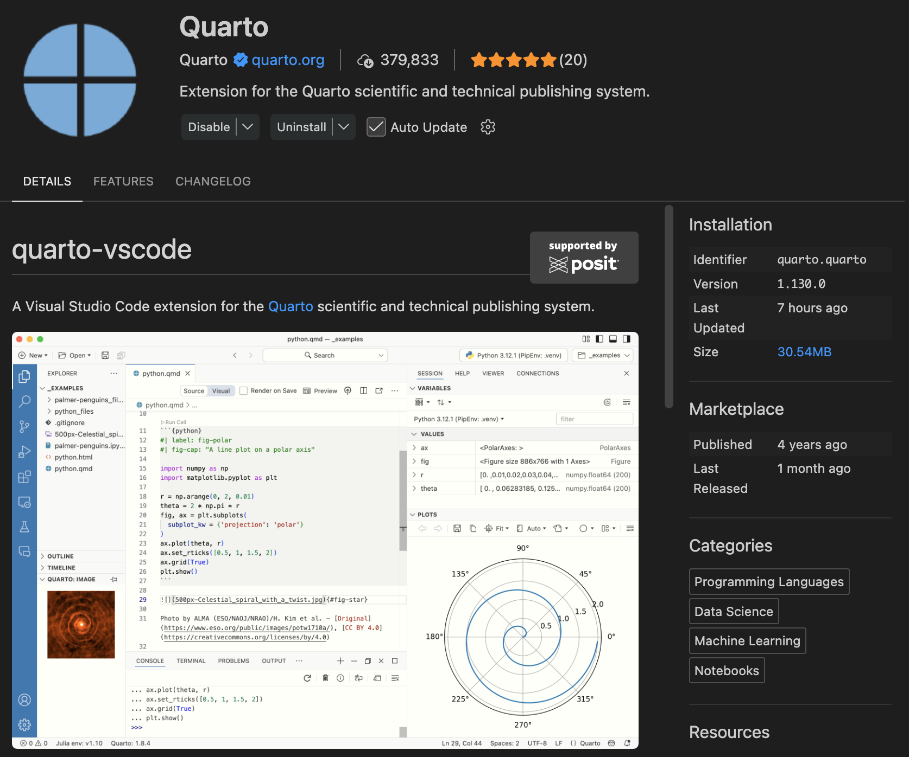

Installing and Verifying Quarto in VS Code
Introduction
Quarto is an open-source publishing system for technical and scientific communication. It allows you to combine narrative text, executable code, and outputs such as figures, tables, and interactive content in a single reproducible document.
A Quarto document typically uses the .qmd extension and can be rendered to multiple formats, including HTML, PDF, slides, dashboards, and books.
Quarto is especially useful when you want to keep text, code, and results together in one place and generate polished outputs from the same source file.
What Quarto is used for
Quarto can be used to create:
- HTML pages and websites
- PDF reports
- slide presentations
- dashboards
- books
- technical documentation
- reproducible analysis reports
It supports narrative writing in Markdown together with code in languages such as Python, R, and Julia.
Prerequisites
Before starting, make sure you have:
- Visual Studio Code installed
- permission to install software on your computer
- access to a terminal
If you plan to execute Python code inside Quarto documents, you should also have Python installed.
Step 1. Install Quarto
To install Quarto:
- Go to the official Quarto website.
- Open the installation or getting started section.
- Select your operating system.
- Download the installer.
- Run the installer and complete the setup process.
After installation, verify it from the terminal with:
quarto check
quarto --versionIf Quarto was installed correctly, these commands should display the installed version and system configuration.
Use both commands after installation:
quarto --versionconfirms that Quarto is availablequarto checkhelps detect configuration problems
Step 2. Install the Quarto extension in VS Code
Once Quarto is installed, enable support in VS Code by installing the Quarto extension.
In VS Code
- Open VS Code
- Open the Extensions panel
- Search for
Quarto - Install the extension published by the Quarto Dev Team
- Restart VS Code if needed
This extension provides features such as:
- syntax highlighting for
.qmdfiles - preview and render integration
- editor support for Quarto projects

Step 3. Verify that Quarto works in VS Code
After installing the extension:
- Open a Quarto document with extension
.qmd - Check whether a Render or Preview button appears in the editor
- Try previewing or rendering the document directly from VS Code
If those features are available, then Quarto is correctly integrated with VS Code.
If Quarto works in the terminal but not in VS Code, the problem is often related to the editor integration, the extension state, or the current file type.
Step 4. Create a minimal test document
A simple test file can be:
---
title: "My first Quarto document"
format: html
---
# Hello Quarto
This is my first Quarto page.Save the file as:
test.qmdThen render it using one of these options:
- the Render button in VS Code
- the Preview button in VS Code, if available
- the terminal with:
quarto render test.qmdStep 5. Understand render vs. preview
These two actions are related, but they are not the same.
Render
quarto render generates the output file, for example an HTML page.
Preview
quarto preview starts a local preview server and lets you inspect changes while you edit the document.
Example:
quarto preview test.qmdUse render when you want the final output.
Use preview when you want to edit and inspect changes interactively.
Recommended verification checklist
Before starting to work seriously with Quarto, confirm all of the following:
quarto --versionworks in the terminalquarto checkruns without critical errors- the Quarto extension is installed in VS Code
.qmdfiles open correctly in the editor- the Render or Preview button appears
- a simple
.qmdfile renders successfully
Common issues
Quarto command not found
If the terminal says quarto: command not found, Quarto is probably not installed correctly or is not available in your system PATH.
VS Code does not show Render or Preview
Possible causes include:
- the Quarto extension is not installed
- VS Code needs to be restarted
- the file is not saved with extension
.qmd - the current workspace has not refreshed correctly
Quarto is installed but preview does not work
Check the following:
- the file has valid YAML at the top
- the Quarto extension is enabled
- the document does not contain syntax errors
- Quarto works correctly from the terminal
Do not assume that Quarto is broken just because preview fails inside VS Code. Always verify first whether quarto render or quarto preview works from the terminal.
Recommended workflow
- Install Quarto
- Verify the installation in the terminal
- Install the Quarto extension in VS Code
- Open a
.qmdfile - Check for Render or Preview in the editor
- Create and test a minimal Quarto document
- Use
quarto renderorquarto previewas needed
Final note
Quarto becomes especially useful when combined with reproducible workflows in VS Code, because it allows you to keep code, text, and outputs together in a single document.
As your projects grow, you can extend the same workflow to websites, reports, presentations, and course materials built from .qmd files.